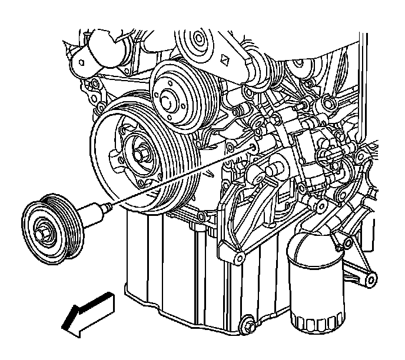
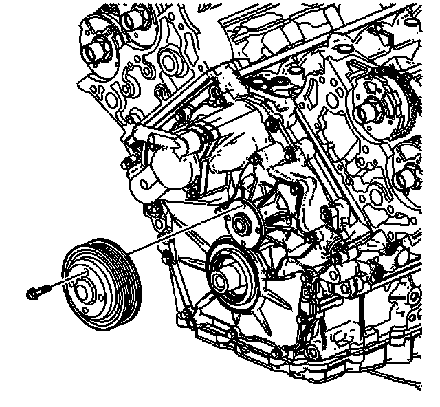
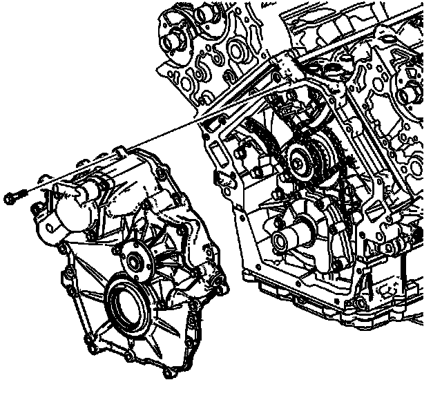
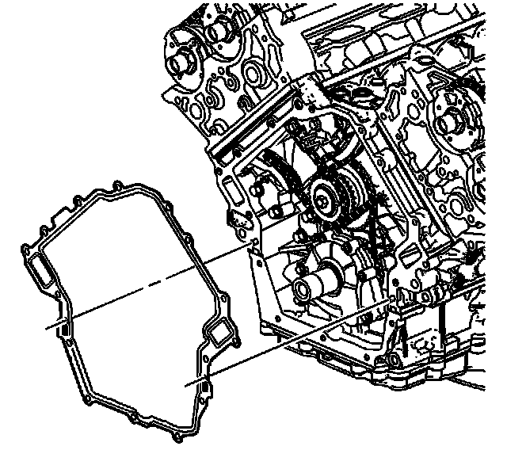
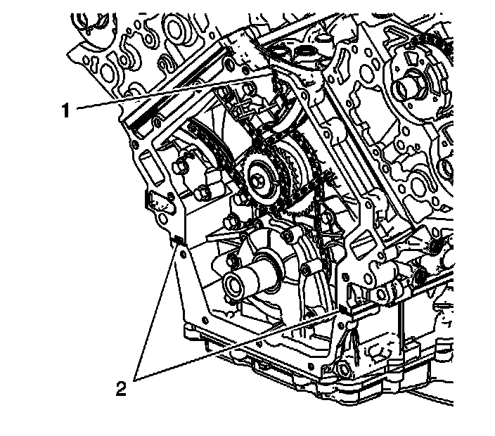
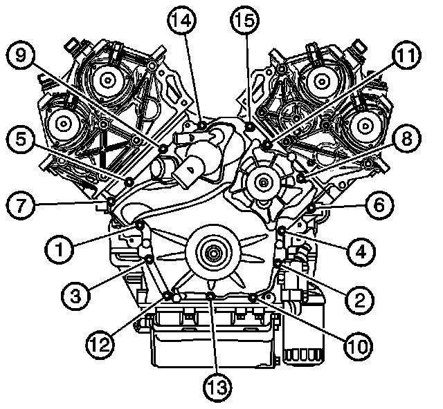

Timing Cover: Service and Repair
Engine Front Cover Replacement
Tools Required
J 38185 Hose Clamp Pliers
Removal Procedure
1. Drain the cooling system. Refer to Cooling System Draining and Filling (GE 47716 -Vac N Fill Coolant Refill Tool) (Service and Repair)Cooling System Draining and Filling (Static Fill) (Service and Repair) .
2. Remove the air outlet duct in order to gain access to the thermostat housing. Refer to Air Cleaner Outlet Duct Replacement (Service and Repair) .
3. Remove the heater hose from the thermostat housing using a J 38185 .
4. Remove the coolant radiator hose from the thermostat housing. Refer to Coolant Bypass Hose Replacement (LH2 - Gas, 8 Cylinder, 4.6L, SFI, V8, DOHC, HO) (Service and Repair) .
5. Remove the auxiliary water pump, if equipped. Refer to Auxiliary Water Pump Replacement (4.6L (LH2 - Gas, 8 Cylinder, 4.6L, SFI, V8, DOHC, HO) w/RPOs V03/V92) (Service and Repair) .
6. Remove the drive belt tensioner. Refer to Drive Belt Tensioner Replacement - Generator (Drive Belt Tensioner Replacement - Generator) and to Drive Belt Tensioner Replacement - Air Conditioning, Power Steering, and Water Pump (Drive Belt Tensioner Replacement - Air Conditioning, Power Steering, and Water Pump) .

7. Remove the drive belt idler pulley bolt.
Remove the drive belt idler pulley.

8. Remove the water pump pulley.
9. Raise and support the vehicle. Refer to Lifting and Jacking the Vehicle (Service and Repair) .
10. Remove the crankshaft balancer. Refer to Crankshaft Balancer Replacement (Service and Repair) .

11. Remove the engine front cover bolts.
12. Remove the engine front cover.

13. Remove and discard the engine front cover gasket.
Cleaning and Inspection
Clean and inspect the engine front cover. Refer to Engine Front Cover Cleaning and Inspection (Overhaul) .
Installation Procedure

1. Place a small amount of sealant at the split line (1) of the upper and lower crankcases, and at the top of the block face. Refer to Sealers, Adhesives, and Lubricants (Specifications) for the correct part number.
2. Place the NEW engine front cover gasket over the crankcase dowel pins.
3. Place the engine front cover in position on the crankcase.
4. Apply thread locking compound to the threads of the engine front cover bolts. Refer to Sealers, Adhesives, and Lubricants (Specifications) for the correct part number.
5. Install the engine front cover retaining bolts.

Notice: Refer to Fastener Notice (Fastener Notice) .
6. Tighten the engine front cover bolts in the sequence shown.
Tighten the engine front cover bolts in proper sequence to 15 N.m (11 lb ft).
7. Install the crankshaft balancer. Refer to Crankshaft Balancer Replacement (Service and Repair) .
8. Install the water pump pulley.
Tighten the water pump pulley bolts to 10 N.m (89 lb in).
9. Install the drive belt idler pulley.
10. Install the drive belt idler pulley bolt.
Tighten the drive belt idler pulley bolt to 50 N.m (37 lb ft).
11. Install the drive belt tensioner. Refer to Drive Belt Tensioner Replacement - Generator (Drive Belt Tensioner Replacement - Generator) and to Drive Belt Tensioner Replacement - Air Conditioning, Power Steering, and Water Pump (Drive Belt Tensioner Replacement - Air Conditioning, Power Steering, and Water Pump) .
12. Install the auxiliary water pump, if equipped. Refer to Auxiliary Water Pump Replacement (4.6L (LH2 - Gas, 8 Cylinder, 4.6L, SFI, V8, DOHC, HO) w/RPOs V03/V92) (Service and Repair) .
13. Install the coolant radiator hose to the thermostat housing. Refer to Coolant Bypass Hose Replacement (LH2 - Gas, 8 Cylinder, 4.6L, SFI, V8, DOHC, HO) (Service and Repair) ,
14. Install the heater hose to the thermostat housing using a J 38185 .
15. Install the air outlet duct. Refer to Air Cleaner Outlet Duct Replacement (Service and Repair) .
16. Fill the cooling system. Refer to Cooling System Draining and Filling (GE 47716 -Vac N Fill Coolant Refill Tool) (Service and Repair)Cooling System Draining and Filling (Static Fill) (Service and Repair) .